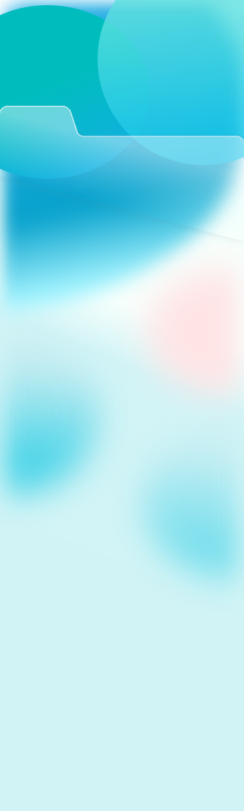
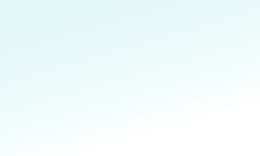
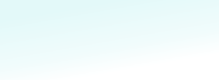
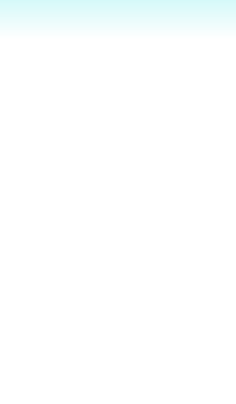

主页原始背景
4424:66054 · 375 × 1243 · 打开 SVG


主页展示原始导出背景。其余三项从 Figma 导出的 SVG 提取底层渐变，可查看源视口。
4424:66054 · 375 × 1243 · 打开 SVG

4424:69079 · 375 × 226 · 打开 SVG

5533:69935 · 375 × 138 · 打开 SVG

4424:69091 · 343 × 585 · 打开 SVG
